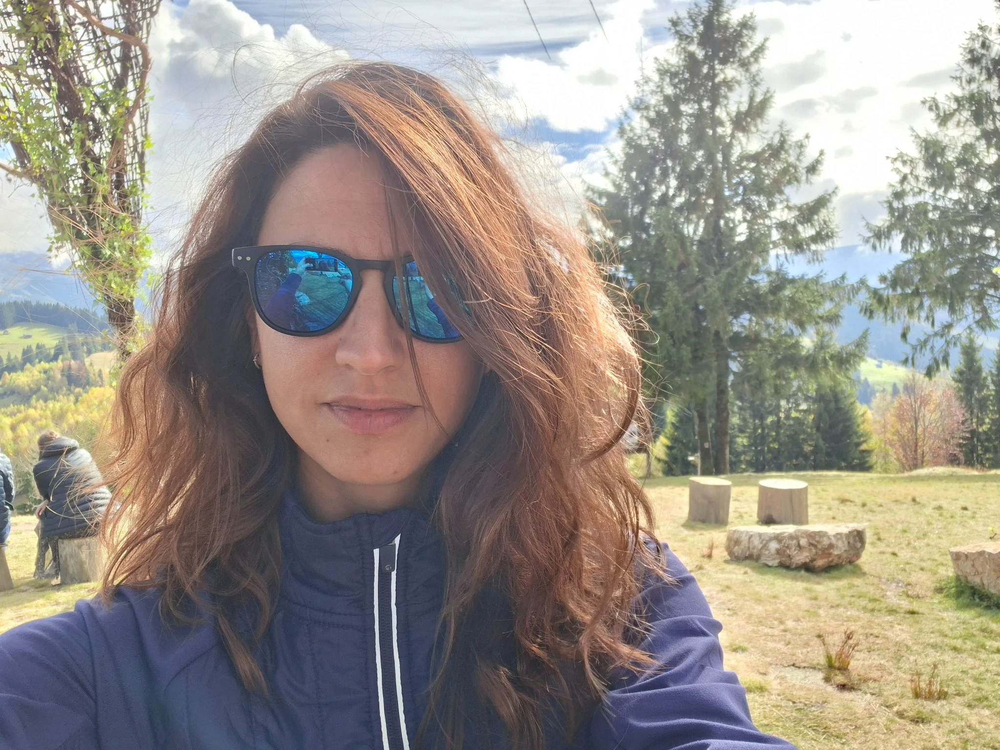

Hi, I’m Corina!
My father was a mountaineer. As a child, I spent my holidays hiking and camping with my family. I still love that moment when a trail opens up and everyone stops talking to look at the view.
Some of my favourite days here start with the Duster and end with muddy boots. I love the stretch between Măgura and Peștera, where you can pull over, step out of the car and hear the bells from a hillside before you spot the sheep. With an e-bike, I get to enjoy those same hills in a completely different way.
I started CoolcuSh Hub Experiences to share the Romania I know. Around Bran and Moieciu that might mean turning off the main road for lunch, following a village footpath or staying on a hill until sunset.
Before I started taking travellers into the mountains, I spent years working in hospitality. The part I loved most was getting to know the people across the bar. I still get that feeling on a day out together. I get to hear where you grew up, you get to ask me about the haystacks or what to order for lunch, and somewhere along the way we get to know each other.
If you’ve come all this way to see Bran Castle, let’s go. If the part you remember afterwards is sharing a pie or pulling over for a photograph you almost missed, I’ll understand that too.
Tell me what you enjoy, how much walking feels good and where you’re staying. We’ll build your day from there.
Plan my adventure